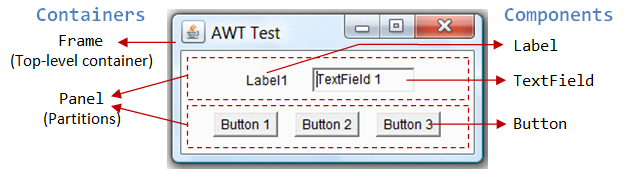
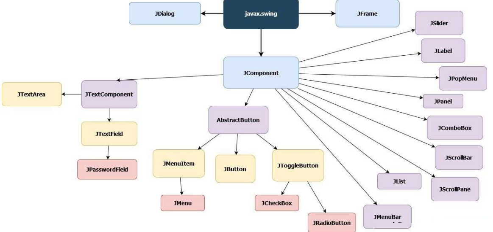
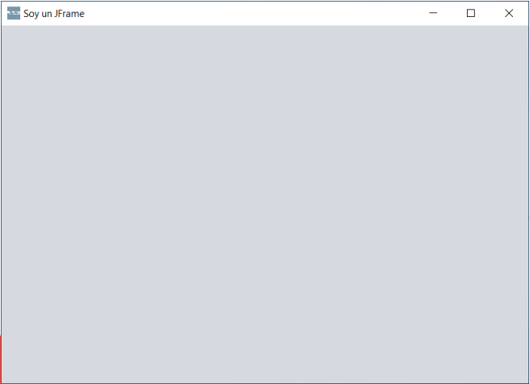
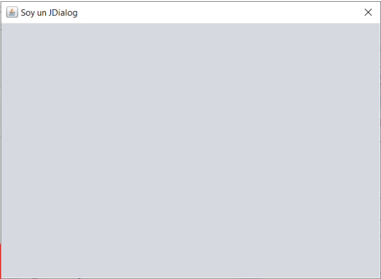
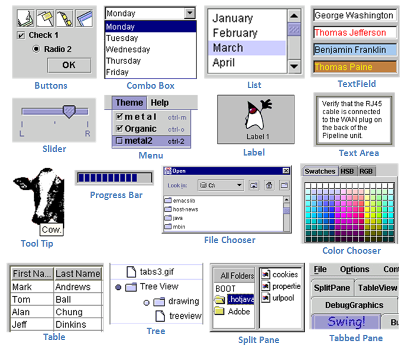
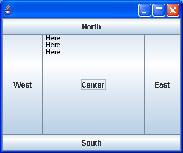
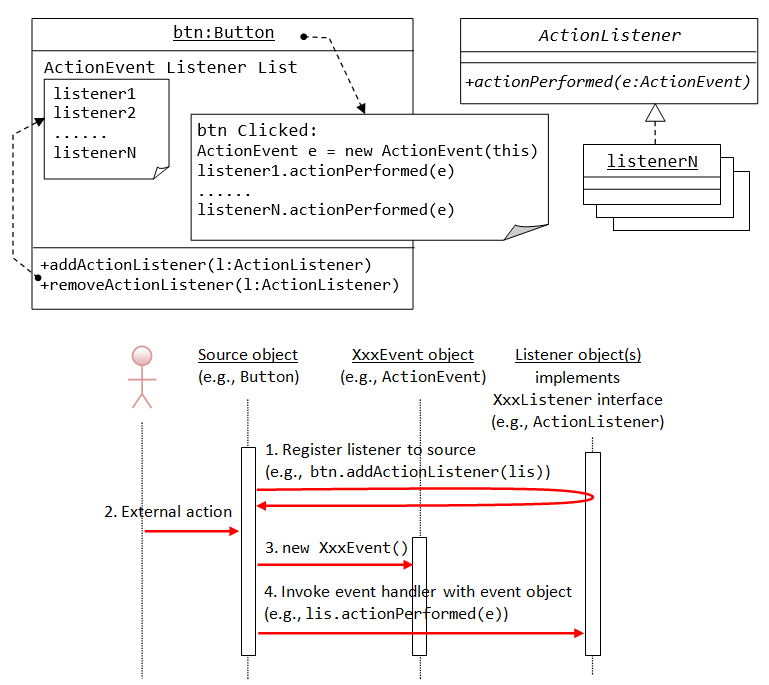
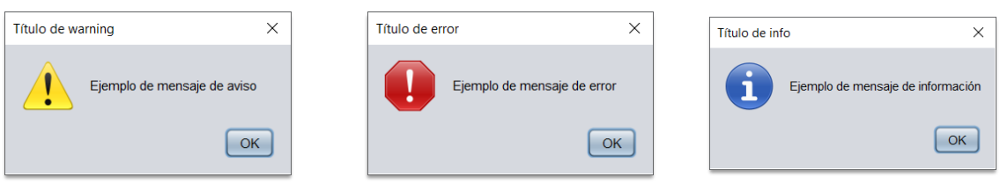
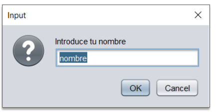
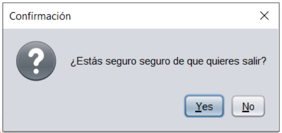

1. Introducción a las Interfaces Gráficas
1.1. Definición de GUI
Llamamos Interfaz Gráfica (GUI - Graphical User Interface) al conjunto de componentes gráficos que posibilitan la interacción entre el usuario y la aplicación.
Las interfaces gráficas se caracterizan por una serie de componentes como:
- Botones
- Cajas de texto
- Etiquetas
- Paneles
- Barras de desplazamiento
- Menús

1.2. Librerías de Java para GUI
Java tiene principalmente dos librerías (APIs) para trabajar con interfaz gráfica:
- AWT (Abstract Window Toolkit): La primera librería de Java para crear interfaces gráficas.
- Swing: Librería moderna y recomendada, más flexible y con más componentes.
2. Abstract Window Toolkit (AWT)
AWT es un kit de herramientas de gráficos, interfaz de usuario y sistema de ventanas independiente de la plataforma original de Java.
AWT es ahora parte de las Java Foundation Classes (JFC), la API estándar
para suministrar una interfaz gráfica de usuario (GUI) para un programa Java.
2.1. Características principales
- Alto grado de fidelidad al kit de herramientas nativo subyacente
- Mejor integración con las aplicaciones nativas
- Dependencia del sistema operativo
3. Swing
Swing es una biblioteca gráfica para Java. Incluye widgets para interfaz gráfica de
usuario tales como cajas de texto, botones, desplegables y tablas.
3.1. Principales Características de Swing
- Sigue un modelo de programación por hilos: Facilita el desarrollo de aplicaciones multihilo.
- Independencia de plataforma: Las aplicaciones Swing funcionan igual en Windows, Linux y macOS.
- Extensibilidad: Es una arquitectura altamente particionada que permite crear componentes personalizados.
- Personalizable: El control permite representar diferentes estilos de apariencia "look and feel" (desde apariencia MacOS hasta apariencia Windows).
3.2. Ventajas de Swing sobre AWT
- Más componentes disponibles
- Mayor flexibilidad en el diseño
- Mejor capacidad de personalización
- Componentes más ligeros (lightweight components)
4. Jerarquía de la Librería Swing
Todos los componentes de Swing heredan del paquete javax.swing.
Para construir aplicaciones utilizando Java Swing se debe tener al menos un contenedor que será la base para la aplicación.
Se puede utilizar, normalmente, un JFrame o JDialog como base para la
ventana y en ellos pintar los paneles, botones, cajas de texto, entre otros.

5. JFrame
JFrame es una clase utilizada en Swing para generar ventanas sobre las cuales añadir
distintos objetos con los que podrá interactuar o no el usuario.

La utilizaremos normalmente como pantalla principal de nuestra aplicación.
La clase JFrame proporciona operaciones para manipular ventanas.
5.1. Constructores de JFrame
// Constructor sin parámetros
JFrame f = new JFrame();
// Constructor con título
JFrame f = new JFrame("Título ventana");
5.2. Propiedades esenciales de JFrame
Una vez creado el objeto de ventana, hay que:
- Establecer su tamaño mediante
setSize(int ancho, int alto) - Establecer la acción de cierre mediante
setDefaultCloseOperation() - Hacerla visible mediante
setVisible(true)
5.3. Acciones de cierre (setDefaultCloseOperation)
JFrame.EXIT_ON_CLOSE // Abandona la aplicación
JFrame.DISPOSE_ON_CLOSE // Libera los recursos asociados a la ventana
JFrame.DO_NOTHING_ON_CLOSE // No hace nada
JFrame.HIDE_ON_CLOSE // Cierra la ventana, sin liberar sus recursos
5.4. Ejemplo básico de JFrame
import javax.swing.*;
public class VentanaTest {
public static void main(String[] args) {
JFrame f = new JFrame("Título ventana");
f.setSize(400, 300);
f.setDefaultCloseOperation(JFrame.EXIT_ON_CLOSE);
f.setVisible(true);
}
}
5.5. Extender JFrame (práctica recomendada)
Es usual extender la clase JFrame, y realizar las operaciones de inicialización en su constructor:
public class MiVentana extends JFrame {
public MiVentana() {
super("Título de ventana");
setSize(400, 300);
setDefaultCloseOperation(JFrame.EXIT_ON_CLOSE);
}
}
public class VentanaTest {
public static void main(String[] args) {
MiVentana v = new MiVentana();
v.setVisible(true);
}
}
6. JDialog
JDialog es una clase utilizada en Swing para generar ventanas sobre las cuales añadir
distintos objetos con los que podrá interactuar o no el usuario.

Generalmente los utilizaremos para el resto de ventanas de nuestra aplicación, que no son la ventana principal.
6.1. Comparativa JFrame vs JDialog
| Característica | JFrame | JDialog |
|---|---|---|
| Uso | Ventana principal de la aplicación | Ventanas secundarias o de diálogo |
| Icono en taskbar | Sí, aparece en la barra de tareas | No, no aparece en la barra de tareas |
| Método setIconImage() | Sí, permite cambiar el icono | No disponible |
| Ventana padre | No admite padres | Admite JFrame o JDialog como padre |
| Modal | No puede ser modal | Puede ser modal (bloquea interacción con padre) |
7. Componentes Estándar de Swing
Los frames (como JFrame) son contenedores, por lo que incluyen un panel de contenido (content pane) al cual se le pueden añadir componentes gráficos y otros contenedores.
Las interfaces gráficas de usuario se construyen con componentes, cada uno de los cuales está preparado para responder a distintos tipos de eventos.
7.1. Componentes principales
JLabel- Etiqueta para mostrar textoJTextField- Caja de texto de una líneaJTextArea- Área de texto multilíneaJButton- Botón clickeableJCheckBox- Caja de comprobación para elegir opcionesJRadioButton- Botón de radio para elegir opciones mutuamente excluyentesJList- Lista de opcionesJComboBox- Lista desplegable de opcionesJScrollBar- Barra de scrollJPanel- Panel contenedorJTree- Árbol de componentesJTable- Tabla de datos

7.2. Componentes de menú y diálogo
JMenuBar- Barra de menúJMenu- Menú desplegableJMenuItem- Opción de menúJOptionPane- Ventanas de diálogo predefinidasJFileChooser- Selector de archivosJColorChooser- Selector de colores
8. Gestores de Diseño (Layout Managers)
8.1. BorderLayout
BorderLayout es el gestor de diseño por defecto para un JFrame.
Permite dividir el espacio disponible en cinco áreas:
- NORTH: Parte superior
- SOUTH: Parte inferior
- EAST: Parte derecha
- WEST: Parte izquierda
- CENTER: Parte central (ocupa el espacio restante)

8.2. Ejemplo de uso de BorderLayout
JButton b = new JButton("Botón");
getContentPane().add(b, BorderLayout.EAST);
JButton b2 = new JButton("Centro");
getContentPane().add(b2, BorderLayout.CENTER);
9. Sistema de Eventos
9.1. ¿Qué es un evento?
Un evento es un suceso que ocurre como consecuencia de la interacción del usuario con la interfaz gráfica.
9.2. Ejemplos de eventos
- Pulsación de un botón
- Cambio del contenido de un cuadro de texto
- Deslizamiento de una barra de desplazamiento
- Activación de un JCheckBox
- Movimiento de la ventana
- Pulsación de una tecla
- Movimiento del ratón
9.3. Listeners (Manejadores de eventos)
Existe una serie de manejadores / controladores de eventos llamados listener.
Estos manejadores deben ser asociados al componente para que este ejecute la respuesta necesaria.
Estos listener son diferentes dependiendo de los eventos a los que van a dar respuesta.

10. Tipos de Listeners
| Listener | Componentes | Acción a la que responden |
|---|---|---|
ActionListener |
JButton, JTextField, JComboBox... | Presionar el botón, pulsar intro, elegir una opción |
AdjustementListener |
JScrollBar | Mover la barra de desplazamiento |
FocusListener |
JButton, JTextField, JComboBox... | Obtener y perder el foco del componente |
ItemListener |
JCheckBox, JRadioButton | Seleccionar y deseleccionar opciones |
KeyListener |
JTextField, JTextArea | Pulsar una tecla cuando el componente tiene el foco |
MouseListener |
Múltiples componentes | Acciones con el ratón (click, press, release, enter, exit) |
11. Ejemplo: Escuchar Pulsación de un Botón
11.1. Implementar ActionListener
La clase JButton tiene un método:
void addActionListener(ActionListener l)
Este método especifica el objeto (manejador de evento) que se encargará de tratar el evento de pulsación del botón.
11.2. Interfaz ActionListener
El objeto debe implementar la interfaz ActionListener del paquete java.awt.event:
public interface ActionListener {
void actionPerformed(ActionEvent e);
}
Cuando el usuario pulse el botón, se llamará automáticamente al método actionPerformed().
11.3. Clase manejadora de eventos
import java.awt.event.ActionListener;
import java.awt.event.ActionEvent;
import javax.swing.*;
public class ManejadorBotones implements ActionListener {
public void actionPerformed(ActionEvent e) {
System.out.println("¡Se ha pulsado el botón!");
}
}
public class Ventana extends JFrame {
public Ventana() {
super("Mi Ventana");
setSize(400, 300);
setDefaultCloseOperation(JFrame.EXIT_ON_CLOSE);
JButton boton = new JButton("Haz click");
ManejadorBotones manejador = new ManejadorBotones();
boton.addActionListener(manejador);
getContentPane().add(boton);
}
}
12. Cuadros de Diálogo Predefinidos
La clase JOptionPane proporciona métodos de utilidad para mostrar ventanas
de aviso, error, confirmación y entrada de datos de manera estándar.
12.1. Mensaje de información/error/aviso
void showMessageDialog(Component padre, Object mensaje,
String tituloVentana, int tipoMensaje)
// Tipos de mensaje:
JOptionPane.INFORMATION_MESSAGE // Mensaje informativo (ícono azul)
JOptionPane.WARNING_MESSAGE // Mensaje de aviso (ícono amarillo)
JOptionPane.ERROR_MESSAGE // Mensaje de error (ícono rojo)
JOptionPane.PLAIN_MESSAGE // Mensaje simple (sin ícono)

12.2. Solicitar entrada de datos
String showInputDialog(Component padre, Object mensaje,
Object valorDefecto)
// Ejemplo:
String nombre = JOptionPane.showInputDialog(this,
"Introduce tu nombre:", "Juan");

12.3. Pedir confirmación
int showConfirmDialog(Component padre, Object mensaje,
String titulo, int tipoOpciones,
int tipoMensaje)
// Tipos de opciones:
JOptionPane.YES_NO_OPTION // Botones Sí / No
JOptionPane.YES_NO_CANCEL_OPTION // Botones Sí / No / Cancelar
JOptionPane.OK_CANCEL_OPTION // Botones OK / Cancelar
// Valores de retorno:
JOptionPane.YES_OPTION // El usuario pulsó Sí (0)
JOptionPane.NO_OPTION // El usuario pulsó No (1)
JOptionPane.CANCEL_OPTION // El usuario pulsó Cancelar (2)
JOptionPane.OK_OPTION // El usuario pulsó OK (0)

12.4. Ejemplo de uso de JOptionPane
// Mostrar mensaje de información
JOptionPane.showMessageDialog(this,
"Proceso completado",
"Información",
JOptionPane.INFORMATION_MESSAGE);
// Solicitar confirmación
int resultado = JOptionPane.showConfirmDialog(this,
"¿Deseas continuar?",
"Confirmación",
JOptionPane.YES_NO_OPTION,
JOptionPane.QUESTION_MESSAGE);
if (resultado == JOptionPane.YES_OPTION) {
// El usuario pulsó Sí
}
13. Buenas Prácticas en Desarrollo de GUI
- Extiende JFrame para la ventana principal: Es más limpio y organizado.
- Utiliza JDialog para ventanas secundarias: Permite establecer una ventana padre y hacer ventanas modales.
- Organiza los componentes con Layout Managers: No posiciones elementos manualmente, usa gestores de diseño.
- Implementa listeners específicos: Usa el listener correcto para cada tipo de evento.
- Separa la lógica de la GUI: Crea clases separadas para los listeners y la lógica de negocio.
- Usa JOptionPane para diálogos estándar: Es más rápido que crear diálogos personalizados.
- Proporciona retroalimentación al usuario: Usa mensajes claros y directos.
- Prueba en diferentes plataformas: Las aplicaciones Swing pueden verse diferentes en Windows, Linux y macOS.